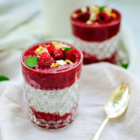
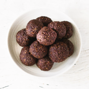
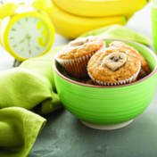

1.Puding sa chia semenkama i bobičastim voćem
Sastojci
375ml kokosovog mleka
375ml bademovog mleka
80g chia semenki
2 supene kašike muslija po izboru ili ovsenih pahuljica
2 kašičice vanila ekstrakta
2 kašičice mlevenog cimeta
250g svežeg ili smrznutog bobičastog voća
25g seckanih badema za aranžiranje
Priprema recepta
U većoj činiji izmešajte kokosovo i bademovo mleko, chia semenke, musli,
vanilu i cimet. Ako koristite smrznuto voće, dodajte ga u ovoj fazi pripreme.
Pošto je navedena količina predviđena za 4 porcije, podelite dobijenu mešavinu na
manje porcije koje ćete preko noći smestiti u frižider. Ujutru pospite seckanim bademima i doručak je spreman.
Ukoliko koristite sveže voće, dodajte ga ujutru zajedno sa bademima.

2.Proteinske kuglice
Sastojci
1/2 šolje badema
1/4 šolje suncokretovog semena
1/4 šolje golice
1/4 kašičice morske soli
1 kašičica ekstrakta od vanile
2 kašike kakaa
1 šolja urmi bez koštica
1 kašičica maka praha
3 kašike vode
Priprema recepta
U električnu seckalicu stavite bademe, seme suncokreta,
golicu i usitnite. Zatim dodajte kakao prah, so, vanilu i maku.
Na kraju dodajte urme i vodu i mešajte u seckalici dok se ne formira ravnomerna masa koju
zatim oblikujete u kuglice i uvaljate ili u kakao prah ili kokosovo brašno.
Kuglice možete čuvati u zamrzivaču, a izvadite ih tridesetak minuta pre serviranja.

3.Mafini sa bananama i ovsenim pahuljicama
Sastojci
2 izgnječene banane
1,5 šolja ovsenih pahuljica
2 kašike kokosovog šećera
1/2 kašičice mlevenog cimeta
1/2 šolje mleka
1/2 šolje seckanih oraha
1 jaje
1 kašičica praška za pecivo
1 kašičica vanila ekstrakta
Priprema recepta
Zagrejati rernu na 190°C i pripremiti 12 kalupa za mafine.
U široj posudi kombinovati sve suve sastojke. Izmešati mleko i jaje, pomešati sa izgnječenim bananama,
a zatim sve sjediniti i puniti modle. Peći dok mafini ne postanu zlatno žuti, oko 30 minuta.
